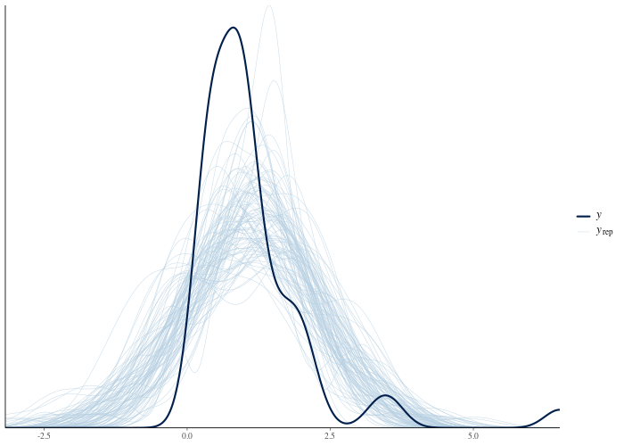

Fit a normal model to positive, skewed data, inspect its predictive checks, then record a review and try a lognormal model. This tutorial requires cmdstanr and CmdStan. The displayed results come from a recorded run; your sampler output may differ. See Concepts for terminology.
A project and a first fit
Every analysis lives in an initialized project: a directory with a
.bayesgrove/ folder holding the graph, the cache, and the
decision log. bg_use_cmdstanr() registers the Stan-backed
node kinds, and bg_use_default_workflow() opts into the
built-in review pack (register the backend first, so the pack sees the
real node kinds rather than its generic placeholders).
library(bayesgrove)
handle <- bg_init(
path = file.path(tempdir(), "bg-getting-started"),
project_name = "Getting Started"
)
bg_use_cmdstanr(handle)
bg_use_default_workflow(handle)The data are 50 skewed, strictly positive measurements. We will do what analysts do all the time: start with a normal model anyway.
bg_fit_stan() collapses the minimal lifecycle into one
call: it creates a data node, attaches the data, creates a fit node
consuming it, and runs the fit. The package ships the example Stan
programs, so the code below runs as pasted.
normal_program <- system.file(
"stan/normal_iid.stan",
package = "bayesgrove",
mustWork = TRUE
)
n_fit <- bg_fit_stan(
handle,
stan_file = normal_program,
data = list(N = length(y), y = y),
label = "Normal model",
seed = 21,
chains = 4
)#> Starting run "run_dfbdc04b" with 1 node to execute.
#> Running node "node_66f87a33"...
#> Running node "node_7bd2286f"...
#> <bg_run_handle> run_dfbdc04b
#> • Status: succeeded
#> • Executed Nodes: 2The fit has no divergences and good R-hats. bg_status()
shows the project state, and bg_next_actions() asks the
workflow pack whether any evidence demands attention:
bg_status(handle)#> $workflow_state
#> [1] "idle"
#>
#> $runnable_nodes
#> [1] 0
#>
#> $blocked_nodes
#> [1] 0
#>
#> $pending_gates
#> [1] 0
#>
#> $active_jobs
#> [1] 0
#>
#> $last_run_id
#> [1] "run_dfbdc04b"
#>
#> $health
#> [1] "ok"
#>
#> $messages
#> character(0)
guide <- bg_next_actions(handle)
guide$obligations#> named list()No obligations. That is worth pausing on: an empty answer here is not “nothing happened”, it is a positive statement that every fresh summary in the project has been reviewed or is unremarkable. So far the only summary is the clean HMC diagnostic from the fit.
A check that fails
Clean sampling says the computation worked, not that the
model is any good. The built-in ppc node kind
computes posterior-predictive p-values for a set of test statistics and
stores plot-ready draws. It takes two inputs: the fit (for the
yrep draws) and the data node (for the observed
y). The fit’s data node is simply the fit node’s input, so
we can read it off the graph:
graph <- bg_read_graph(handle)
n_data <- Filter(
function(edge) identical(edge$to, n_fit),
graph$edges
)[[1]]$from
n_ppc <- bg_add_node(
handle,
kind = "ppc",
label = "PPC: normal model",
inputs = c(n_fit, n_data),
params = list(stats = c("mean", "sd", "min", "max"))
)
run <- bg_run(handle, targets = n_ppc)#> Starting run "run_631ca2d5" with 1 node to execute.
#> Running node "node_7ea22ed9"...The p-values compare each statistic of the observed data against its posterior-predictive distribution. Values near 0 or 1 mean the model cannot reproduce that feature of the data:
ppc_summary <- bg_read_summaries(handle, include_stale = FALSE)
ppc_summary <- Filter(
function(s) identical(s$summary_kind, "posterior_predictive_check"),
ppc_summary
)[[1]]
ppc_summary$severity
ppc_summary$metrics#> [1] "warning"
#> $max
#> [1] 2e-04
#>
#> $mean
#> [1] 0.5098
#>
#> $min
#> [1] 2e-04
#>
#> $sd
#> [1] 0.5025The model predicts negative values absent from the data
(min) and fails to reproduce the largest observations
(max). The mean and sd checks do
not flag these problems. Posterior-predictive p-values are conservative;
an unremarkable value is weak evidence of fit. Inspect the predictive
plot:
bg_plot(handle, n_ppc)
The obligation, and the decision that answers it
The extreme p-values arrived as a warning-severity
summary, and the default pack raises a blocking obligation. At project
scope it uses review_computation_validity (the optional
packs add more specific vocabularies):
guide <- bg_next_actions(handle)
vapply(guide$obligations, `[[`, character(1), "kind")
vapply(guide$actions, `[[`, character(1), "kind")#> obl_a969dc96
#> "review_computation_validity"
#> act_16593cd9 act_ed08cddc
#> "record_decision" "branch_and_modify"An obligation is a demand raised from evidence; each one comes with suggested actions that would resolve it. Blocking obligations also translate into holds: pass them to the planner and any node downstream of the criticized one stays parked until the review happens.
held_plan <- bg_plan(handle, external_holds = guide$metadata$external_holds)
held_plan$external_blocked#> list()The list is empty because the failing check has no downstream nodes yet. A dependent node would be held until the obligation is resolved.
To resolve the obligation we record a decision. A decision is a
permanent log entry: the prompt, the choice, the rationale, and the ids
of the evidence it covers. The suggested record_decision
action carries the right metadata in its payload, so we do not have to
assemble it by hand:
review <- Filter(
function(a) identical(a$kind, "record_decision"),
guide$actions
)[[1]]
bg_record_decision(
handle,
scope = "project",
prompt = "Does the normal model reproduce the data?",
choice = "reject_normal_model",
rationale = paste(
"The observed minimum is far outside the posterior predictive",
"distribution: the data are strictly positive and right-skewed,",
"and a normal model cannot express that. Refit on the log scale."
),
kind = review$payload$decision_type,
metadata = review$payload[c("node_ids", "summary_ids")]
)
bg_next_actions(handle)$obligations#> <bg_decision_record> dec_632c0a7b
#> • Prompt: Does the normal model reproduce the data?
#> • Choice: reject_normal_model
#> • Rationale: The observed minimum is far outside the posterior predictive
#> distribution: the data are strictly positive and right-skewed, and a normal
#> model cannot express that. Refit on the log scale.
#> named list()The recorded review resolves the obligation. The summary and decision remain available so a reviewer can trace the rejection to its evidence.
Branch to the repair
Try the lognormal model on a branch to keep the rejected fit and its
criticism in the record. bg_branch() copies the fit node
into a new branch; bg_update_node() merges params, so only
the Stan program needs swapping. The default pack asks every active
branch for an inferential goal, which doubles as documentation of why
the branch exists.
branch <- bg_branch(handle, n_fit, label = "Lognormal model")
bg_set_goal(
project = handle,
branch_id = branch$branch_id,
kind = "observable_prediction",
label = "Positive-valued predictions",
rationale = "The rejected normal fit motivates a lognormal likelihood."
)
lognormal_program <- system.file(
"stan/lognormal_iid.stan",
package = "bayesgrove",
mustWork = TRUE
)
bg_update_node(
handle,
branch$root_node_id,
params = list(stan_file = lognormal_program)
)
run2 <- bg_run(handle, targets = branch$root_node_id)#> <bg_decision_record> dec_ca79d9cb
#> • Prompt: Set inferential goal
#> • Choice: Positive-valued predictions
#> • Rationale: The rejected normal fit motivates a lognormal likelihood.
#> [1] "node_4610511f"
#> Starting run "run_f3475fdc" with 1 node to execute.
#> Running node "node_4610511f"...A second ppc node on the branch confirms the repair:
n_ppc2 <- bg_add_node(
handle,
kind = "ppc",
label = "PPC: lognormal model",
inputs = c(branch$root_node_id, n_data),
params = list(stats = c("mean", "sd", "min", "max"))
)
bg_run(handle, targets = n_ppc2)
ppc2 <- Filter(
function(s) {
identical(s$summary_kind, "posterior_predictive_check") &&
identical(s$node_id, n_ppc2)
},
bg_read_summaries(handle, include_stale = FALSE)
)[[1]]
ppc2$severity
ppc2$metrics#> Starting run "run_cc95c582" with 1 node to execute.
#> Running node "node_70de7bc7"...
#> <bg_run_handle> run_cc95c582
#> • Status: succeeded
#> • Executed Nodes: 1
#> [1] "ok"
#> $max
#> [1] 0.2
#>
#> $mean
#> [1] 0.4708
#>
#> $min
#> [1] 0.6925
#>
#> $sd
#> [1] 0.3262Both models remain in the graph: the rejected normal fit with its failed check and the decision that rejected it, and the lognormal fit with a clean one:
print(bg_read_graph(handle))#> ── Execution Graph ──
#>
#> └── Normal model_data <stan_data> [new]
#> ├── Normal model <cmdstanr_fit> [new]
#> │ └── PPC: normal model <ppc> [new]
#> ├── [already shown: PPC: normal model]
#> ├── Lognormal model <cmdstanr_fit> [new]
#> │ └── PPC: lognormal model <ppc> [new]
#> └── [already shown: PPC: lognormal model]Continue the analysis
- Eight schools shows how to review sampler diagnostics and reparameterize a model.
- The roaches case study compares competing models and records which branches to accept.
- Reproducible research covers reports and project bundles.
For gates, scopes, and evidence freshness, see Concepts. For additional workflow packs and
custom executors, see Extensions. Use
bg_repl(handle) to inspect reviews and execute suggested
actions interactively.